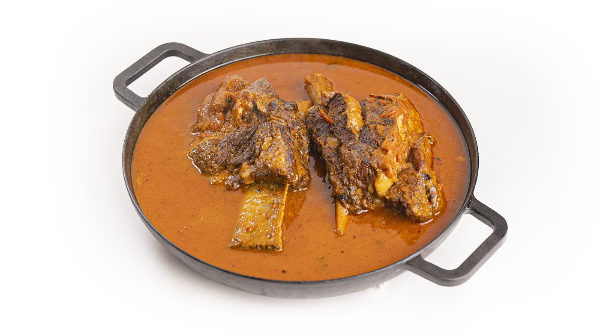

Dutch Beef Ribs

Slow-cooked beef ribs are a classic comfort food that never fails to impress.
By searing the beef ribs on a hot plate before transferring them to a Dutch oven for long and slow cooking,
you can achieve a depth of flavor that is simply irresistible.
The searing process helps to caramelize the meat's surface, resulting in a rich and complex taste that will complement the tender,
fall-off-the-bone meat that you'll get from slow cooking.
This recipe is perfect for a weekend dinner or special occasion when you want to indulge in a hearty,
flavorful meal that will leave your taste buds wanting more. So, let's get started!
Ingredients
- 1,5 kg / 3.3 lbs Beef Rib
- 4 tbs Pit master X BBQ Beef Rub
- 2 bell peppers
- 3 red onions
- 6 tomatoes/li>
- 30 grams / 1 oz chipotle in adobo sauce
- 7 cloves garlic
- 50 grams / 1.7 oz butter
- 700 ml / 3 cups sieved tomatoes
- 700 ml / 3 cups water
- 2 bay leaves
- 1 tbs cumin seeds
How to..
Perfect Dutch Oven Ribs
- Slice the beef ribs in 2 individual ribs and keep the membrane on the back.
Make the Pit master BBQ Beef Rub and season all sides with the rub.
- Chop up some bell peppers, red onions,tomatoes,
fresh cilantro, garlic cloves and some chipotle peppers in adobo sauce.
- Fire up the Chad-O-Chef Boma with some small timber and 3 fire starters as kindle.
- When you have a small fire going and the timber burned up,
put in a couple of bigger log's to get a bigger fire going.
- Once the plate is hot, pour some sunflower oil over the plate and spread it out with a piece of cloth.
- Sear the bell peppers, red onions, tomatoes, garlic cloves and chipotle peppers in adobo sauce on the hot plate.
- Meanwhile warm up your Skottsberg pan in the center above the fire.
- Add the grilled ingredients to the pan once everything is picked up enough flavor from searing.
- Add 700 ml of sieved tomatoes, 700 ml of water 1 tbsp cumin seeds, 2 bay leaves, 5 cloves and
- 2 tbsp of beef rib rub and let it simmer with the lit off.
- Sear the beef ribs on the hot plate with some butter to create as much of texture on the ribs as possible.
- Dust your ribs in a 1 tbsp of all purpose flour while searing to multiply the crust.
- Put both beef ribs in the pan and let it simmer with the lit on for around 2 hours.
PIT-MASTERS RECIPE
Chicken Sandwich
Greek Gyros